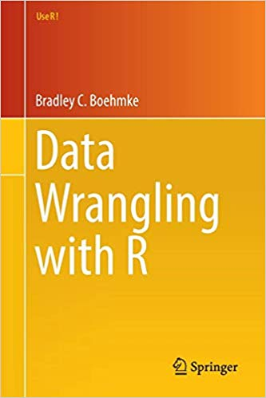

Welcome
본 페이지는 R을 이용한 데이터 랭글링 강의 페이지이며, 다음과 같은 내용으로 구성되었습니다.
- Part 1: 데이터 타입별 다루기
- Chapter 1: Numbers
- Chapter 2: Character Strings
- Chapter 3: Factors
- Chapter 4: Date
- Part 2: 데이터 구조 다루기
- Chapter 5: Data Structure Basics
- Chapter 6: Vector
- Chapter 7: List
- Chapter 8: Matrix
- Chapter 9: Data Frame
- Chapter 10: Missing Value
- Part 3: 데이터 불러오기 및 내보내기
- Chapter 11: Import Data
- Chapter 12: Exporting Data
- Part 4: 데이터 구조 변형하기
- Chapter 13: 함수
- Chapter 14: Loop Statement
- Chapter 15: Pipe Operator (%>%)
- Part 5: 데이터 구조 변형하기
- Chapter 16: tidyr을 이용한 데이터 모양 바꾸기
- Chapter 17: dplyr을 이용한 데이터 변형하기
본 강의록의 대부분 내용은 Bradley C. Boehmke의 Data Wrangling with R (Use R!)을 참조하였습니다.
https://www.amazon.com/Data-Wrangling-R-Use/dp/3319455982

Contact Information
- E-mail: leebisu@gmail.com
- Henry’s Quantopia: https://blog.naver.com/leebisu
- GitHub: https://github.com/hyunyulhenry/
(PART) 데이터 타입별 다루기
1 Numbers
R에서 숫자 형태는 크게 integer와 double로 나눌 수 있습니다. 이 중 integer는 정수를 의미하며, double은 부동소수점 실수를 의미합니다.
1.1 integer와 double의 vector 만들기
먼저 double 형태의 벡터를 만듭니다.
dbl_var = c(1, 2.5, 4.5)
dbl_var## [1] 1.0 2.5 4.5숫자 뒤에 L을 붙이면 integer(정수) 형태로 입력됩니다.
int_var = c(1L, 6L, 10L)
int_var## [1] 1 6 101.1.1 둘 간의 형태 바꾸기
as.*() 함수를 이용해 각 데이터의 형태(Type)을 바꿀 수 있습니다.
as.double(int_var)## [1] 1 6 10# as.numeric(int_var)as.double() 함수를 통해 integer 형태를 double 형태로 바꿀 수 있습니다. as.numeric() 함수는 as.double()과 동일한 역할을 합니다.
as.integer(dbl_var)## [1] 1 2 4as.integer() 함수를 통해 double 형태를 integer 형태로 바꿀 수 있습니다. 소수점이 사라지고 정수형태로 바뀌었습니다.
1.2 비임의(Non-random) 숫자 생성하기
콜론(:)과 c() 함수를 통해 순서가 있는 숫자 벡터를 생성할 수 있습니다.
1:10## [1] 1 2 3 4 5 6 7 8 9 10콜론을 통해 1에서 10까지 숫자가 생성됩니다.
c(1, 5, 10)## [1] 1 5 10c() 함수 내부에 입력한 숫자로 벡터가 생성됩니다.
1.2.1 seq() 함수 이용
seq() 함수를 이용할 경우 더욱 다양하게 숫자 벡터를 생성할 수 있습니다.
seq(from = 1, to = 21, by = 2)## [1] 1 3 5 7 9 11 13 15 17 19 21from에는 시작 숫자, to에는 종료 숫자, by에는 간격을 입력합니다. 즉 1에서 21까지 2 단위로 숫자가 생성됩니다.
seq(0, 21, length.out = 15)## [1] 0.0 1.5 3.0 4.5 6.0 7.5 9.0 10.5 12.0 13.5 15.0 16.5 18.0 19.5 21.0인자에 length.out을 쓸 경우 from에서 to까지 동일한 증가폭으로 15개의 숫자를 생성합니다.
rep(1: 4)## [1] 1 2 3 4rep() 함수 역시 seq() 함수와 비슷한 역할을 합니다.
rep(1:4, times = 2)## [1] 1 2 3 4 1 2 3 4times 인자를 추가해줄 경우, 해당 숫자만큼 반복되어 벡터가 생성됩니다.
rep(1:4, each = 2)## [1] 1 1 2 2 3 3 4 4each 인자를 추가할 경우, 각 숫자를 n번 반복하여 벡터가 생성됩니다.
1.3 임의(Random) 숫자 생성하기
이번에는 임의의 숫자를 생성하는 방법에 대해 알아보겠습니다.
1.3.1 Uniform Numbers
균등 분포(Uniform distribution)에서 임의의 숫자를 생성하기 위해서는 runif() 함수를 사용합니다.
runif(5)## [1] 0.2876 0.7883 0.4090 0.8830 0.9405기본적으로 runif() 함수는 0과 1사이에서 임의의 숫자를 생성하며, 괄호 안에 입력된 숫자만큼의 갯수의 난수를 생성합니다.
runif(5, min = 0, max = 25)## [1] 1.139 13.203 22.310 13.786 11.415min과 max인자를 추가할 경우 해당 값 사이에서 난수를 생성합니다.
sample() 함수 역시 Uniform Number를 생성할 수 있습니다.
sample(0:25, 10, replace = TRUE)## [1] 19 13 21 24 25 4 18 24 24 80에서 25까지 숫자중에서 10개의 숫자를 선택하며, replace를 TRUE로 할 경우 복원추출, FALSE로 할 경우 비복원추출을 시행합니다.
1.3.2 Non-Uniform Numbers
비균등 확률 분포에서 난수를 생성하기 위해서는 크게 4가지 함수가 있습니다.
- r*: 난수 생성
- d*: 밀도(Density) 혹은 확률 질량 함수(Probability mass function)
- p*: 누적 분포(Cumulative distribution)
- q*: 분위수(Quantile)
1.3.2.1 정규 분포(Normal Distribution)
R에서 정규 분포 관련 함수는 *norm() 입니다.

rnorm(10, mean = 0, sd = 1)## [1] 0.4008 0.1107 -0.5558 1.7869 0.4979 -1.9666 0.7014 -0.4728 -1.0678 -0.2180rnorm() 함수를 이용하여 평균이 0, 표준편차가 1인 정규분포 함수에서 난수 10개를 생성합니다.
dnorm(0, mean = 0, sd = 1)## [1] 0.3989d = 0인 지점의 밀도를 계산합니다.
pnorm(0, mean = 0, sd = 1)## [1] 0.5d = 0인 지점의 누적 분포를 구합니다.
qnorm(0.5, mean = 0, sd = 1)## [1] 0누적 분포가 0.5인 지점의 분위수를 구합니다.
1.3.2.2 기타 분포
정규 분포 외에도 여러 분포에서 난수를 생성할 수 있습니다. 각 함수별 인자는 help()를 통해 확인할 수 있습니다.
- 이항 분포: rbinom, dbinom, pbinom, qbinom
- 푸아송 분포: rpois, dpois, ppois, qpois
- 지수 분포: rexp, dexp, pexp, qexp
- 감마 분포: rgamma, dgamma, pgamma, qgamma
1.4 반올림
숫자의 올림, 내림, 반올림 등을 실행합니다. 먼저 다음과 같이 숫자를 입력합니다.
x = c(1, 1.35, 1.7, 2.05, 2.4, 2.75, 3.1, 3.45, 3.8, 4.15,
4.5, 4.85, 5.2, 5.55, 5.9)round(x)## [1] 1 1 2 2 2 3 3 3 4 4 4 5 5 6 6round() 함수는 가장 가까운 정수로 반올림을 합니다.
round(x, digits = 2)## [1] 1.00 1.35 1.70 2.05 2.40 2.75 3.10 3.45 3.80 4.15 4.50 4.85 5.20 5.55 5.90함수 내부에 digits 인자를 추가해 줄 경우, 해당 자리수 만큼 반올림을 합니다.
ceiling(x)## [1] 1 2 2 3 3 3 4 4 4 5 5 5 6 6 6ceiling() 함수는 올림을 실행합니다.
floor(x)## [1] 1 1 1 2 2 2 3 3 3 4 4 4 5 5 5floor() 함수는 내림을 실행합니다.
2 Character Strings
문자열은 R의 기본함수 및stringr 패키지를 이용해 쉽게 다룰 수 있습니다.
2.1 문자열 기본
a = 'learning to create'
b = 'character strings'
paste(a, b)## [1] "learning to create character strings"paste() 함수를 이용해 두 문자를 붙일 수 있습니다.
paste('pi is', pi)## [1] "pi is 3.14159265358979"R에서 pi는 숫자로 입력되어 있으며, paste() 함수를 통해 문자열과 숫자를 붙일수도 있습니다.
paste('I', 'love', 'R', sep = '-')## [1] "I-love-R"sep 인자를 추가할 경우, 각 단어를 구분하는 문자를 입력할 수 있습니다.
paste0('I', 'love', 'R')## [1] "IloveR"paste0() 함수는 구분 문자가 없이 결합됩니다.
2.2 문자열 출력
문자를 출력하는데 다음과 같은 함수가 있습니다.
print(): 기본적인 출력 함수noquote(): 쿼트("") 생략cat(): 문자열 결합 및 쿼트 생략
x = 'learning to print strings'
print(x)## [1] "learning to print strings"print(x, quote = 'FALSE')## [1] learning to print stringsprint() 함수를 이용해 기본적인 출력을 할 수 있으며, quote 인자를 FALSE로 지정하여 쿼트를 생략할 수도 있습니다.
noquote(x)## [1] learning to print stringsnoquote() 함수를 이용할 경우 쿼트가 출력되지 않습니다.
cat(x)## learning to print stringscat(x, 'in R')## learning to print strings in Rcat() 함수를 이용할 경우도 출력이 가능하며, 여러 문자를 결합한 뒤 출력하는 것 또한 가능합니다.
2.3 문자열 갯수 확인
x = 'How many elements are in this string?'
length(x)## [1] 1length() 함수의 경우 element의 갯수를 세므로, 1이 출력됩니다.
nchar(x)## [1] 37반면 nchar() 함수를 이용하여 문장 내 문자의 갯수를 셀 수 있습니다.
2.4 stringr 패키지를 이용한 문자열 다루기
R의 기본함수를 이용하여도 문자열을 다룰 수 있지만, stringr 패키지를 이용할 경우 더욱 작업을 수행할 수 있습니다.
2.4.1 기본 사용법
library(stringr)
str_c('Learning', 'to', 'use', 'the', 'stringr', 'package')## [1] "Learningtousethestringrpackage"str_c() 함수는 paste0()와 기능이 동일합니다.
library(stringr)
str_c('Learning', 'to', 'use', 'the', 'stringr', 'package', sep = ' ')## [1] "Learning to use the stringr package"sep 인자를 통해 구분자를 추가할 수 있으며, 이는 paste()와 동일합니다.
text = c('Learning', 'to', NA, 'use', 'the', NA, 'stringr', 'package')
str_length(text)## [1] 8 2 NA 3 3 NA 7 7str_length() 함수는 문자의 갯수를 셉니다.
x = 'Learning to use the stringr package'
str_sub(x, start = 1, end = 15)## [1] "Learning to use"str_sub() 함수는 start부터 end까지의 문자를 출력합니다.
str_sub(x, start = -7, end = -1)## [1] "package"start 혹은 end에 음수를 입력하면, 문장의 맨 끝에서부터 start/end 지점이 계산됩니다.
str_dup('beer', times = 3)## [1] "beerbeerbeer"str_dub() 함수를 이용해 특정 문자를 반복되게 출력할 수 있습니다.
2.4.2 공백(Whitespace) 제거
텍스트 데이터를 다룰때는 빈 공백이 따라오는 경우가 많으며, 데이터분석의 편이를 위해 이를 제거해야 합니다.
text = c('Text ', ' with', ' whitespace ', ' on', 'both ', 'sides ')
print(text)## [1] "Text " " with" " whitespace " " on" "both " "sides "각 단어의 좌/우 혹은 양쪽에 공백이 있습니다.
str_trim(text, side = 'left')## [1] "Text " "with" "whitespace " "on" "both " "sides "str_trim(text, side = 'right')## [1] "Text" " with" " whitespace" " on" "both" "sides"str_trim(text, side = 'both')## [1] "Text" "with" "whitespace" "on" "both" "sides"str_trim() 함수를 통해 좌/우/양쪽의 공백을 제거할 수 있습니다.
2.4.3 문자열 자리수 채우기
원하는 자리수를 채우기 위해 문자열에 공백 혹은 특정 문자를 입력할 수 있습니다.
str_pad('beer', width = 10, side = 'left')## [1] " beer"10자리를 맞추기 위해 좌측에 공백이 추가되었습니다.
str_pad('beer', width = 10, side = 'left', pad = '!')## [1] "!!!!!!beer"pad 인자를 추가할 경우, 공백이 아닌 해당 문자가 추가됩니다.
3 Factors
R에서 Factor 형태는 범주형(categorical) 데이터를 다룰때 사용됩니다.
3.1 팩터 생성 및 탐색
gender = factor(c('male', 'female', 'female', 'male', 'female'))
gender## [1] male female female male female
## Levels: female malefactor() 함수를 통해 팩터를 생성하며, Levels에는 값들의 고유값인 female과 male이 설정되어 있습니다.
unclass(gender)## [1] 2 1 1 2 1
## attr(,"levels")
## [1] "female" "male"levels(gender)## [1] "female" "male"summary(gender)## female male
## 3 2female은 1, male은 2의 integer가 매칭되어 있으므로, unclass() 함수를 이용하여 대표값을 출력할 수 있습니다. 또한 levels() 함수를 이용해 레벨을 출력할 수 있으며, summary() 함수를 이용할 경우 각 레벨의 빈도가 출력됩니다.
3.2 레벨에 순서 부여하기
gender = factor(c('male', 'female', 'female', 'male', 'female'))
gender## [1] male female female male female
## Levels: female male레벨을 정의하지 않을 시, 알파벳 순서인 female, male의 순서로 레벨이 정의됩니다.
gender = factor(c('male', 'female', 'female', 'male', 'female'),
levels = c('male', 'female'))
gender## [1] male female female male female
## Levels: male female반면 levels 인자를 입력하면, 레벨의 순서가 정의됩니다.
ses = c('low', 'middle', 'low', 'low', 'low', 'low', 'middle', 'low', 'middle',
'middle', 'middle', 'middle', 'middle', 'high', 'high', 'low', 'middle',
'middle', 'low', 'high')
ses = factor(ses, levels = c('low', 'middle', 'high'), ordered = TRUE)
ses## [1] low middle low low low low middle low middle middle middle middle middle high high
## [16] low middle middle low high
## Levels: low < middle < high또한 ordered 인자를 TRUE로 지정할 시, levels의 크기도 정의됩니다.
3.3 순서 재정의
library(forcats)
fct_recode(ses, small = 'low', medium = 'middle', large = 'high')## [1] small medium small small small small medium small medium medium medium medium medium large large
## [16] small medium medium small large
## Levels: small < medium < largeforcats 패키지의 fct_recode() 함수를 이용해 팩터의 레벨을 재입력 할 수 있습니다. 이 외에도 해당 패키지에는 팩터를 다룰수 있는 다양한 함수가 존재합니다.
4 Date
날짜, 시간에 관련된 데이터는 R의 기본함수 및 lubridate 패키지를 이용해 쉽게 다룰 수 있습니다.
4.1 현재 날짜 및 시간
Sys.timezone()## [1] "Asia/Seoul"Sys.Date()## [1] "2021-09-04"Sys.time()## [1] "2021-09-04 17:11:03 KST"기본 함수를 통해 현재 타임존 및 날짜, 시간을 확인할 수 있습니다.
4.2 문자열을 날짜로 변경하기
x = c('2015-07-01', '2015-08-01', '2015-09-01')
x_date = as.Date(x)
str(x_date)## Date[1:3], format: "2015-07-01" "2015-08-01" "2015-09-01"as.Date() 함수를 이용할 경우, 문자열 형태가 Date로 변경됩니다.
y = c('07/01/2015', '08/01/2015', '09/01/2015')
as.Date(y, format = '%m/%d/%Y')## [1] "2015-07-01" "2015-08-01" "2015-09-01"YYYY-MM-DD 형태가 아닌 다른 형태로 입력된 경우, format을 직접 입력하여 Date 형태로 변경할 수 있습니다.
library(lubridate)
ymd(x)## [1] "2015-07-01" "2015-08-01" "2015-09-01"mdy(y)## [1] "2015-07-01" "2015-08-01" "2015-09-01"lubridate 패키지를 이용할 경우 YYYY-MM-DD 형태는 ymd(), MM-DD-YYYY 형태는 mdy() 함수를 사용해 손쉽게 Date 형태로 변경할 수 있습니다. 이 외에도 lubridate에는 Date 형태로 변경하기 위한 다양한 함수가 존재합니다.
| 순서 | 함수 |
|---|---|
| year, month, day | ymd() |
| year, day, month | ydm() |
| month, day, year | mdy() |
| day, month, year | dmy() |
| hour, minute | hm() |
| hour, minute, second | hms() |
| year, month, day, hour, minute, secod | ymd_hms() |
4.3 날짜 관련 정보 추출
lubridate 패키지에는 날짜 관련 정보를 추출할 수 있는 다양한 함수가 존재합니다.
| 정보 | 함수 |
|---|---|
| Year | year() |
| Month | month() |
| Week | week() |
| Day of year | yday() |
| Day of month | mday() |
| Day of week | wday() |
| Hour | hour() |
| Minute | minute() |
| Second | second() |
| Time zone | tz() |
x = c('2015-07-01', '2015-08-01', '2015-09-01')year(x)## [1] 2015 2015 2015month(x)## [1] 7 8 9week(x)## [1] 26 31 35year(), month(), week() 함수를 통해 년도, 월, 주 정보를 확인할 수 있습니다.
z = '2015-09-15'yday(z)## [1] 258mday(z)## [1] 15wday(z)## [1] 3yday(), mday(), wday() 함수는 각각 해당 년도에서 몇번째 일인지, 해당 월에서 몇번째 일인지, 해당 주에서 몇번째 일인지를 계산합니다.
x = ymd('2015-07-01', '2015-08-01', '2015-09-01')
x + years(1) - days(c(2, 9, 21))## [1] "2016-06-29" "2016-07-23" "2016-08-11"날짜에서 년도와 월, 일자를 더하거나 빼는 계산 역시 가능합니다.
4.4 날짜 순서 생성하기
seq() 함수를 이용할 경우 날짜 벡터를 생성할 수도 있습니다.
seq(ymd('2010-01-01'), ymd('2015-01-01'), by ='years')## [1] "2010-01-01" "2011-01-01" "2012-01-01" "2013-01-01" "2014-01-01" "2015-01-01"2010년 1월 1일부터 2015년 1월 1일까지 1년을 기준으로 벡터가 생성됩니다.
seq(ymd('2010-09-01'), ymd('2010-09-30'), by ='2 days')## [1] "2010-09-01" "2010-09-03" "2010-09-05" "2010-09-07" "2010-09-09" "2010-09-11" "2010-09-13" "2010-09-15"
## [9] "2010-09-17" "2010-09-19" "2010-09-21" "2010-09-23" "2010-09-25" "2010-09-27" "2010-09-29"지정 일수만큼 벡터를 생성할 수도 있습니다.
(PART) 데이터 구조 다루기
5 Data Structure Basics
R의 데이터구조는 크게 벡터, 리스트, 매트릭스, 데이터프레임으로 나누어집니다. (array는 잘 사용되지 않습니다)
| Dimension | Homogeneous | Heterogeneous |
|---|---|---|
| 1D | Atomic Vector | List |
| 2D | Matrix | Data frame |
| nD | Array |
Homogenous는 컬럼간 데이터 구조가 같은 경우, Heterogeneous는 다른 경우입니다.
5.1 구조 파악하기
str() 함수를 이용해 각 데이터의 구조(structure)를 파악할 수 있습니다.
vector = 1:10
list = list(item1 = 1:10, item2 = LETTERS[1:18])
matrix = matrix(1:12, nrow = 4)
df = data.frame(item1 = 1:18, item2 = LETTERS[1:18])vector## [1] 1 2 3 4 5 6 7 8 9 10str(vector)## int [1:10] 1 2 3 4 5 6 7 8 9 10list## $item1
## [1] 1 2 3 4 5 6 7 8 9 10
##
## $item2
## [1] "A" "B" "C" "D" "E" "F" "G" "H" "I" "J" "K" "L" "M" "N" "O" "P" "Q" "R"str(list)## List of 2
## $ item1: int [1:10] 1 2 3 4 5 6 7 8 9 10
## $ item2: chr [1:18] "A" "B" "C" "D" ...matrix## [,1] [,2] [,3]
## [1,] 1 5 9
## [2,] 2 6 10
## [3,] 3 7 11
## [4,] 4 8 12str(matrix)## int [1:4, 1:3] 1 2 3 4 5 6 7 8 9 10 ...df## item1 item2
## 1 1 A
## 2 2 B
## 3 3 C
## 4 4 D
## 5 5 E
## 6 6 F
## 7 7 G
## 8 8 H
## 9 9 I
## 10 10 J
## 11 11 K
## 12 12 L
## 13 13 M
## 14 14 N
## 15 15 O
## 16 16 P
## 17 17 Q
## 18 18 Rstr(df)## 'data.frame': 18 obs. of 2 variables:
## $ item1: int 1 2 3 4 5 6 7 8 9 10 ...
## $ item2: chr "A" "B" "C" "D" ...6 Vector
벡터는 R의 가장 기본적인 데이터 구조로써 integer, double, logical, character로 이루어져 있습니다.
6.1 벡터 만들기
vec_integer = 8:17
vec_integer## [1] 8 9 10 11 12 13 14 15 16 17vec_double = c(0.5, 0.6, 0.2)
vec_double## [1] 0.5 0.6 0.2vec_logical = c(TRUE, FALSE, FALSE)
vec_logical## [1] TRUE FALSE FALSEvec_char = c('a', 'b', 'c')
vec_char## [1] "a" "b" "c"c('a', 'b', 'c', 1, 2, 3)## [1] "a" "b" "c" "1" "2" "3"숫자와 문자가 같이 벡터로 묶일 경우, 숫자는 모두 문자 형태로 변경됩니다.
c(1, 2, 3, TRUE, FALSE)## [1] 1 2 3 1 0숫자와 논리값(Logical: TRUE/FALSE)이 같이 묶일 경우 TRUE는 1, FALSE는 0으로 치환된 후 숫자 형태로 변경됩니다.
c('a', 'b', 'c', TRUE, FALSE)## [1] "a" "b" "c" "TRUE" "FALSE"문자와 논리값이 같이 묶일 경우 모두 문자 형태로 변경됩니다.
6.2 벡터에 값 추가하기
v1 = 8:17
c(v1, 18:22)## [1] 8 9 10 11 12 13 14 15 16 17 18 19 20 21 22c() 함수를 이용해 기존 벡터에 새로운 값을 추가할 수 있습니다.
6.3 벡터 추출하기
대괄호([])을 이용해 원하는 부분의 데이터를 추출할 수 있습니다.
v1## [1] 8 9 10 11 12 13 14 15 16 17v1[2]## [1] 9v1[2:4]## [1] 9 10 11v1[c(2, 4, 6, 8)]## [1] 9 11 13 15v1[c(2, 2, 4)]## [1] 9 9 11대괄호 안에 숫자를 입력시, 벡터에서 해당 순서의 데이터가 추출됩니다.
v1[-1]## [1] 9 10 11 12 13 14 15 16 17v1[-c(2, 4, 6, 8)]## [1] 8 10 12 14 16 17마이너스 기호를 입력 시, 해당 순서를 제외한 데이터가 추출됩니다.
v1[v1 < 12]## [1] 8 9 10 11v1[v1 < 12 | v1 > 15]## [1] 8 9 10 11 16 17대괄호 내부에 조건을 설정하여 데이터를 추출할 수도 있습니다.
7 List
List 형태는 항목(Element) 간 타입이나 길이가 달라도 데이터가 결합할 수 있습니다.
7.1 리스트 생성하기
l = list(1:3, 'a', c(TRUE, FALSE, TRUE), c(2.5, 4.2))
str(l)## List of 4
## $ : int [1:3] 1 2 3
## $ : chr "a"
## $ : logi [1:3] TRUE FALSE TRUE
## $ : num [1:2] 2.5 4.2첫번째 리스트는 정수, 두번째는 문자, 세번째는 논리값, 네번째는 숫자로 이루어져 있습니다.
l = list(1:3, list(letters[1:5], c(TRUE, FALSE, TRUE)))
str(l)## List of 2
## $ : int [1:3] 1 2 3
## $ :List of 2
## ..$ : chr [1:5] "a" "b" "c" "d" ...
## ..$ : logi [1:3] TRUE FALSE TRUE또한 리스트 내에 리스트를 생성하는 것 역시 가능합니다.
7.2 기존 리스트에 데이터 추가하기
l1 = list(1:3, 'a', c(TRUE, FALSE, TRUE))
str(l1)## List of 3
## $ : int [1:3] 1 2 3
## $ : chr "a"
## $ : logi [1:3] TRUE FALSE TRUEl2 = append(l1, list(c(2.5, 4.2)))
str(l2)## List of 4
## $ : int [1:3] 1 2 3
## $ : chr "a"
## $ : logi [1:3] TRUE FALSE TRUE
## $ : num [1:2] 2.5 4.2append() 함수를 이용해 기존 리스트에 추가로 리스트를 붙일 수 있습니다.
l2$item4 = 'new list item'
str(l2)## List of 5
## $ : int [1:3] 1 2 3
## $ : chr "a"
## $ : logi [1:3] TRUE FALSE TRUE
## $ : num [1:2] 2.5 4.2
## $ item4: chr "new list item"또한 기존 리스트에 달러 사인($)을 입력할 경우, 이름과 함께 리스트가 추가됩니다.
7.3 리스트 추출하기
리스트 역시 대괄호를 이용해 데이터를 추추할 수 있습니다.
l2[1]## [[1]]
## [1] 1 2 3l2[c(1,3)]## [[1]]
## [1] 1 2 3
##
## [[2]]
## [1] TRUE FALSE TRUE리스트에 이름이 있을 경우, 이를 이용해 추출도 가능합니다.
l2['item4']## $item4
## [1] "new list item"대괄호를 두번, 혹은 달러 사인을 이용해 데이터를 추출할 경우 결과물의 형태는 단순화되어 나타납니다.
l2[[1]]## [1] 1 2 3l2$item4## [1] "new list item"특정 리스트에서 항목을 추출하기 위해서는 [[와 [를 함께 사용합니다.
l2[[1]]## [1] 1 2 3l2[[1]][3]## [1] 38 Matrix
8.1 행렬 생성하기
m1 = matrix(1:6, nrow = 2, ncol = 3)
m1## [,1] [,2] [,3]
## [1,] 1 3 5
## [2,] 2 4 6matrix() 함수를 이용해 행렬을 생성할 수 있으며, nrow와 ncol을 통해 행과 열 갯수를 지정할 수 있습니다.
m2 = matrix(letters[1:6], nrow = 2, ncol = 3)
m2## [,1] [,2] [,3]
## [1,] "a" "c" "e"
## [2,] "b" "d" "f"문자 형태로 이루어진 행렬 역시 생성할 수 있습니다. 그러나 숫자와 문자가 한 행렬 내에서 같이 사용될 수는 없습니다.
v1 = 1:4
v2 = 5:8cbind(v1, v2)## v1 v2
## [1,] 1 5
## [2,] 2 6
## [3,] 3 7
## [4,] 4 8rbind(v1, v2)## [,1] [,2] [,3] [,4]
## v1 1 2 3 4
## v2 5 6 7 8cbind() 함수는 열로 데이터를 합치며, rbind() 함수는 행으로 데이터를 합칩니다.
8.2 기존 행렬에 데이터 추가하기
cbind()와 rbind() 함수를 이용해 기존 행렬에 데이터를 추가할 수 있습니다.
m1 = cbind(v1, v2)
m1## v1 v2
## [1,] 1 5
## [2,] 2 6
## [3,] 3 7
## [4,] 4 8v3 = 9:12
cbind(m1, v3)## v1 v2 v3
## [1,] 1 5 9
## [2,] 2 6 10
## [3,] 3 7 11
## [4,] 4 8 128.3 행이름 및 열이름 추가하기
m2 = matrix(1:12, nrow = 4, ncol = 3)
m2## [,1] [,2] [,3]
## [1,] 1 5 9
## [2,] 2 6 10
## [3,] 3 7 11
## [4,] 4 8 12rownames(m2) = c('row1', 'row2', 'row3', 'row4')
m2## [,1] [,2] [,3]
## row1 1 5 9
## row2 2 6 10
## row3 3 7 11
## row4 4 8 12colnames(m2) = c('col1', 'col2' ,'col3')
m2## col1 col2 col3
## row1 1 5 9
## row2 2 6 10
## row3 3 7 11
## row4 4 8 12rownames()와 colnames() 함수를 이용해 행 및 열이름을 직접 지정할 수 있습니다.
8.4 행렬 추출하기
행렬 역시 대괄호를 이용해 데이터를 추출할 수 있으며, 공백으로 둘시 모든 행(열)을 선택하게 됩니다.
m2## col1 col2 col3
## row1 1 5 9
## row2 2 6 10
## row3 3 7 11
## row4 4 8 12m2[1:2, ]## col1 col2 col3
## row1 1 5 9
## row2 2 6 10m2[ , c(1,3)]## col1 col3
## row1 1 9
## row2 2 10
## row3 3 11
## row4 4 12m2[1:2, c(1,3)]## col1 col3
## row1 1 9
## row2 2 10만일 하나의 열만 선택시 결과가 벡터 형태로 출력되며, drop = FALSE 인자를 추가해주면 행렬의 형태가 유지되어 출력됩니다.
m2[, 2]## row1 row2 row3 row4
## 5 6 7 8m2[, 2, drop = FALSE]## col2
## row1 5
## row2 6
## row3 7
## row4 89 Data Frame
데이터프레임은 R에서 가장 널리 사용되는 형식으로써, 각 컬럼이 다른 클래스를 가질 수 있습니다.
9.1 데이터프레임 생성하기
df = data.frame (col1 = 1:3,
col2 = c ("this", "is", "text"),
col3 = c (TRUE, FALSE, TRUE),
col4 = c (2.5, 4.2, pi))
str(df)## 'data.frame': 3 obs. of 4 variables:
## $ col1: int 1 2 3
## $ col2: chr "this" "is" "text"
## $ col3: logi TRUE FALSE TRUE
## $ col4: num 2.5 4.2 3.14col1은 숫자, col2는 팩터, col3는 논리연산자, col4는 숫자로 구성되어 있습니다. R에서는 문자형식을 자동으로 팩터로 인식하며, 이를 원하지 않을 경우 stringsAsFactors = FALSE를 입력합니다.
df = data.frame (col1 = 1:3,
col2 = c ("this", "is", "text"),
col3 = c (TRUE, FALSE, TRUE),
col4 = c (2.5, 4.2, pi),
stringsAsFactors = FALSE)
str(df)## 'data.frame': 3 obs. of 4 variables:
## $ col1: int 1 2 3
## $ col2: chr "this" "is" "text"
## $ col3: logi TRUE FALSE TRUE
## $ col4: num 2.5 4.2 3.14또한 벡터 혹은 리스트를 이용해 데이터프레임을 생성할 수도 있습니다.
v1 = 1:3
v2 = c ("this", "is", "text")
v3 = c (TRUE, FALSE, TRUE)
data.frame (col1 = v1, col2 = v2, col3 = v3)## col1 col2 col3
## 1 1 this TRUE
## 2 2 is FALSE
## 3 3 text TRUEl = list (item1 = 1:3,
item2 = c ("this", "is", "text"),
item3 = c (2.5, 4.2, 5.1))
l## $item1
## [1] 1 2 3
##
## $item2
## [1] "this" "is" "text"
##
## $item3
## [1] 2.5 4.2 5.1as.data.frame (l)## item1 item2 item3
## 1 1 this 2.5
## 2 2 is 4.2
## 3 3 text 5.19.2 기존 데이터프레임에 데이터 추가하기
cbind() 함수를 통해 기존 데이터프레임에 새로운 열을 추가할 수 있습니다.
df## col1 col2 col3 col4
## 1 1 this TRUE 2.500
## 2 2 is FALSE 4.200
## 3 3 text TRUE 3.142v4 = c ("A", "B", "C")cbind(df, v4)## col1 col2 col3 col4 v4
## 1 1 this TRUE 2.500 A
## 2 2 is FALSE 4.200 B
## 3 3 text TRUE 3.142 Crbind() 함수를 사용할 경우 새로운 행을 추가할 수 있습니다. 주의할 점은 각 행의 클래스가 기존 데이터와 일치해야 합니다.
v5 = c (4, "R", F, 1.1)
rbind(df, v5)## col1 col2 col3 col4
## 1 1 this TRUE 2.5
## 2 2 is FALSE 4.2
## 3 3 text TRUE 3.14159265358979
## 4 4 R FALSE 1.19.3 데이터프레임추출하기
데이터프레임 역시 대괄호를 이용해 데이터를 추출할 수 있으며, 공백으로 둘시 모든 행(열)을 선택하게 됩니다.
df## col1 col2 col3 col4
## 1 1 this TRUE 2.500
## 2 2 is FALSE 4.200
## 3 3 text TRUE 3.142df[2:3, ]## col1 col2 col3 col4
## 2 2 is FALSE 4.200
## 3 3 text TRUE 3.142컬럼 이름을 통해 데이터를 선택할 수도있습니다.
df[ , c('col2', 'col4')]## col2 col4
## 1 this 2.500
## 2 is 4.200
## 3 text 3.142만일 하나의 열만 선택시 결과가 벡터 형태로 출력되며, drop = FALSE 인자를 추가해주면 데이터프레임의 형태가 유지되어 출력됩니다.
df[, 2]## [1] "this" "is" "text"df[, 2, drop = FALSE]## col2
## 1 this
## 2 is
## 3 text10 Missing Value
데이터 분석에서 결측치를 처리하는 것은 매우 중요하며, R에서 결측치는 NA로 표시됩니다.
10.1 결측치 테스트
is.na() 함수를 통해 결측치 여부를 확인할 수 있습니다.
x = c(1:4, NA, 6:7, NA)
x## [1] 1 2 3 4 NA 6 7 NAis.na(x)## [1] FALSE FALSE FALSE FALSE TRUE FALSE FALSE TRUENA의 경우 TRUE, 그렇지 않을 경우 FALSE를 반환합니다.
df = data.frame (col1 = c (1:3, NA),
col2 = c ("this", NA,"is", "text"),
col3 = c (TRUE, FALSE, TRUE, TRUE),
col4 = c (2.5, 4.2, 3.2, NA),
stringsAsFactors = FALSE)
df## col1 col2 col3 col4
## 1 1 this TRUE 2.5
## 2 2 <NA> FALSE 4.2
## 3 3 is TRUE 3.2
## 4 NA text TRUE NAis.na(df)## col1 col2 col3 col4
## [1,] FALSE FALSE FALSE FALSE
## [2,] FALSE TRUE FALSE FALSE
## [3,] FALSE FALSE FALSE FALSE
## [4,] TRUE FALSE FALSE TRUEwhich(is.na(df))## [1] 4 6 16데이터프레임 역시 is.na() 함수를 적용할 수 있으며, which() 함수를 통해 NA 데이터의 위치를 찾을 수도 있습니다.
10.2 결측치 제거
10.2.1 평균값 대체
y = c(1, 3, NA, 4)
y## [1] 1 3 NA 4mean(y)## [1] NA데이터에 결측치가 존재하면, 일반적인 연산함수의 결과로 NA를 반환합니다.
mean(y, na.rm = TRUE)## [1] 2.667na.rm = TRUE를 추가해주면, NA 데이터를 제외한 나머지 데이터를 대상으로 연산을 합니다.
10.2.2 데이터 제거
결측치가 있는 데이터를 삭제해 주는 경우도 있습니다.
df = data.frame (col1 = c (1:3, NA),
col2 = c ("this", NA,"is", "text"),
col3 = c (TRUE, FALSE, TRUE, TRUE),
col4 = c (2.5, 4.2, 3.2, NA),
stringsAsFactors = FALSE)
df## col1 col2 col3 col4
## 1 1 this TRUE 2.5
## 2 2 <NA> FALSE 4.2
## 3 3 is TRUE 3.2
## 4 NA text TRUE NA2행과 4행에 NA 데이터가 존재합니다.
na.omit(df)## col1 col2 col3 col4
## 1 1 this TRUE 2.5
## 3 3 is TRUE 3.2na.omit() 함수를 이용해 NA가 존재하는 행을 삭제해주도록 합니다.
10.3 결측치 대체
결측치가 존재할 경우 평균값을 대신 사용하기도 합니다.
x## [1] 1 2 3 4 NA 6 7 NAx[is.na(x)] = mean(x, na.rm = TRUE)
x## [1] 1.000 2.000 3.000 4.000 3.833 6.000 7.000 3.833결측치 대신 나머지 값들의 평균인 3.833을 대체하였습니다.
(PART) 데이터 불러오기 및 내보내기
11 Import Data
데이터 분석의 첫번째 단계는 데이터를 불러오는 것이며, 일반적으로 텍스트 혹은 엑셀 파일로 저장된 데이터를 사용합니다.
아래와 같은 데이터가 각각 csv, excel, RDS 파일로 저장된 예제를 살펴보겠습니다.
variable 1, variable 2, variable 3
10,beer,TRUE
25,wine,TRUE
8,cheese,FALSE해당 파일의 주소는 다음과 같습니다.
csv: https://github.com/hyunyulhenry/data_wrangling/blob/master/mydata.csv
txt: https://github.com/hyunyulhenry/data_wrangling/blob/master/mydata.txt
excel: https://github.com/hyunyulhenry/data_wrangling/blob/master/mydata.xlsx
rds: https://github.com/hyunyulhenry/data_wrangling/blob/master/mydata.rds먼저 다음 코드를 이용해 해당 파일들을 다운로드 받도록 합니다.
download.file('https://raw.githubusercontent.com/hyunyulhenry/data_wrangling/master/mydata.csv', 'mydata.csv')
download.file('https://raw.githubusercontent.com/hyunyulhenry/data_wrangling/master/mydata.txt', 'mydata.txt')
download.file('https://github.com/hyunyulhenry/data_wrangling/raw/master/mydata.xlsx','mydata.xlsx', mode = 'wb')
download.file('https://github.com/hyunyulhenry/data_wrangling/raw/master/mydata.rds','mydata.rds')11.1 csv 파일 불러오기
먼저 R의 기본함수와 readr 패키지를 이용하여 csv 파일을 불러오는 법에 대해 살펴보겠습니다.
11.1.1 기본함수
read.table() 함수는 데이터를 불러오는 R의 가장 기본인 함수며, read.csv()와 read.delim() 함수는 특수한 경우의 래퍼 함수라 볼 수 있습니다.
mydata = read.csv('mydata.csv')
mydata## variable.1 variable.2 variable.3
## 1 10 beer TRUE
## 2 25 wine TRUE
## 3 8 cheese FALSEstr(mydata)## 'data.frame': 3 obs. of 3 variables:
## $ variable.1: int 10 25 8
## $ variable.2: chr "beer" "wine" "cheese"
## $ variable.3: logi TRUE TRUE FALSE먼저 열이름인 variable 다음에 점(.)이 붙은 것이 확인됩니다. 이처럼 기본함수를 사용할 경우 열 이름의 공백은 점으로 바뀌게 됩니다.
또한 variable 2의 문자열이 자동으로 팩터 형태로 바뀌게 되었습니다. 이를 방지하기 위해서는 stringAsFactors를 FALSE로 지정해주어야 합니다.
mydata2 = read.csv('mydata.csv', stringsAsFactors = FALSE)
str(mydata2)## 'data.frame': 3 obs. of 3 variables:
## $ variable.1: int 10 25 8
## $ variable.2: chr "beer" "wine" "cheese"
## $ variable.3: logi TRUE TRUE FALSEread.table() 함수를 이용하여 csv 데이터를 불러올 수도 있습니다.
read.table('mydata.csv', sep = ',', header = TRUE, stringsAsFactors = FALSE)## variable.1 variable.2 variable.3
## 1 10 beer TRUE
## 2 25 wine TRUE
## 3 8 cheese FALSE구분자에 해당하는 sep를 ’,’로 지정해 주며, 열이름에 해당하는 header를 TRUE로 지정해줍니다.
read.table('mydata.csv', sep = ',', header = TRUE, stringsAsFactors = FALSE,
row.names = c('Row 1', 'Row 2', 'Row 3'),
col.names = c('Var 1', 'Var 2', 'Var 3'))## Var.1 Var.2 Var.3
## Row 1 10 beer TRUE
## Row 2 25 wine TRUE
## Row 3 8 cheese FALSErow.names와 col.names 인자를 통해 행 및 열이름을 직접 지정할 수도 있습니다.
set_classes = read.table('mydata.csv', sep = ',', header = TRUE,
colClasses = c('numeric', 'character', 'character'))
str(set_classes)## 'data.frame': 3 obs. of 3 variables:
## $ variable.1: num 10 25 8
## $ variable.2: chr "beer" "wine" "cheese"
## $ variable.3: chr "TRUE" "TRUE" "FALSE"colClasses 인자를 통해 각 열에 해당하는 클래스를 직접 지정해줄 수도 있으며, 2번째 열이 팩터가 아닌 문자 형태로 입력됩니다.
read.table('mydata.csv', sep = ',', header = TRUE, nrows = 2)## variable.1 variable.2 variable.3
## 1 10 beer TRUE
## 2 25 wine TRUEnrows 인자를 통해 전체 데이터가 아닌 지정한 행까지의 데이터만 불러올 수도 있습니다.
11.1.2 readr 패키지
기본 함수 대비 readr 패키지를 이용할 경우 10배 정도 빠르게 데이터를 불러올 수 있습니다.
library(readr)
mydata3 = read_csv('mydata.csv')
str(mydata3)## spec_tbl_df [3 x 3] (S3: spec_tbl_df/tbl_df/tbl/data.frame)
## $ variable 1: num [1:3] 10 25 8
## $ variable 2: chr [1:3] "beer" "wine" "cheese"
## $ variable 3: logi [1:3] TRUE TRUE FALSE
## - attr(*, "spec")=
## .. cols(
## .. `variable 1` = col_double(),
## .. `variable 2` = col_character(),
## .. `variable 3` = col_logical()
## .. )
## - attr(*, "problems")=<externalptr>read_csv() 함수를 이용해 csv 파일을 불러올 수 있습니다. 열이름의 공백이 그대로 유지되며, 문자 형태 역시 팩터가 아닌 원래 형식이 그대로 유지됩니다.
read_csv('mydata.csv', col_types = list(col_double(),
col_character(),
col_character()))## # A tibble: 3 x 3
## `variable 1` `variable 2` `variable 3`
## <dbl> <chr> <chr>
## 1 10 beer TRUE
## 2 25 wine TRUE
## 3 8 cheese FALSEcol_types 인자를 통해 원하는 타입을 직접 입력할 수도 있습니다.
read_csv('mydata.csv', col_names = c('Var 1', 'Var 2', 'Var 3'),
skip = 1)## # A tibble: 3 x 3
## `Var 1` `Var 2` `Var 3`
## <dbl> <chr> <lgl>
## 1 10 beer TRUE
## 2 25 wine TRUE
## 3 8 cheese FALSEcol_names 인자를 통해 열이름을 입력할 수 있으며, skip을 통해 위에서 n번째 행을 건너뛰고 데이터를 불러올 수 있습니다.
read_csv('mydata.csv', n_max = 2)## # A tibble: 2 x 3
## `variable 1` `variable 2` `variable 3`
## <dbl> <chr> <lgl>
## 1 10 beer TRUE
## 2 25 wine TRUEn_max 인자를 통해 전체 데이터가 아닌 지정한 행까지의 데이터만 불러올 수도 있습니다.
11.2 텍스트 파일 불러오기
.txt 파일로 저장된 텍스트 파일 역시 read.delim() 혹은 read.table() 함수를 이용해 불러올 수 있습니다.
read.delim('mydata.txt', sep = ',')## variable.1 variable.2 variable.3
## 1 10 beer TRUE
## 2 25 wine TRUE
## 3 8 cheese FALSEread.table('mydata.txt', sep = ',', header = TRUE)## variable.1 variable.2 variable.3
## 1 10 beer TRUE
## 2 25 wine TRUE
## 3 8 cheese FALSE11.3 엑셀 파일 불러오기
엑셀 파일을 불러오기 위한 패키지는 매우 많으며, 이 중 xlsx와 readxl 패키지를 살펴보도록 하겠습니다.
11.3.1 openxlsx 패키지
openxlsx 패캐지의 read.xlsx() 함수를 이용해 엑셀 데이터를 불러올 수 있습니다.
library(openxlsx)
read.xlsx('mydata.xlsx', sheet = 'Sheet1')## variable.1 variable.2 variable.3
## 1 10 beer TRUE
## 2 25 wine TRUE
## 3 8 cheese FALSEread.xlsx('mydata.xlsx', sheet = 'Sheet2')## variable.4 variable.5
## 1 Dayton johnny
## 2 Columbus amber
## 3 Cleveland tony
## 4 Cincinnati alice엑셀은 여러 시트로 구성되어 있으므로, sheet 인자를 통해 원하는 시트명의 내용만 불러올 수 있습니다.
read.xlsx('mydata.xlsx', sheet = 'Sheet3')## Header.Company.A X2
## 1 What if we want to disregard header text in Excel file? <NA>
## 2 variable 6 variable 7
## 3 200 Male
## 4 225 Female
## 5 400 Female
## 6 310 Male간혹 엑셀 파일에는 데이터가 아닌 설명을 위한 텍스트가 적힌 경우도 있으므로, 이를 제외하고 데이터를 불러올 필요가 있습니다.
read.xlsx('mydata.xlsx', sheet = 'Sheet3', startRow = 3)## variable.6 variable.7
## 1 200 Male
## 2 225 Female
## 3 400 Female
## 4 310 MalestartRow 인자를 통해 3번째 행부터 데이터를 불러오게 되어, 불필요한 텍스트가 제거되었습니다.
read.xlsx('mydata.xlsx', sheet = 'Sheet3', rows = 3:5)## variable.6 variable.7
## 1 200 Male
## 2 225 FemalerowIndex 인자를 통해 원하는 행의 데이터만 불러올 수 있습니다.
11.3.2 readxl 패키지
readxl 패키지는 readr 패키지와 거의 비슷하며, C++을 기반으로 하여 매우 빠른 속도를 자랑합니다.
library(readxl)
mydata = read_excel('mydata.xlsx', sheet = 'Sheet5')
mydata## # A tibble: 3 x 5
## `Variable 1` `Variable 2` `Variable 3` `Variable 4` `Variable 5`
## <dbl> <chr> <dbl> <dttm> <dttm>
## 1 10 beer 1 2015-11-20 00:00:00 2015-11-20 13:30:00
## 2 25 wine 1 NA 2015-11-21 16:30:00
## 3 8 <NA> 0 2015-11-22 00:00:00 2015-11-22 14:45:00str(mydata)## tibble [3 x 5] (S3: tbl_df/tbl/data.frame)
## $ Variable 1: num [1:3] 10 25 8
## $ Variable 2: chr [1:3] "beer" "wine" NA
## $ Variable 3: num [1:3] 1 1 0
## $ Variable 4: POSIXct[1:3], format: "2015-11-20" NA "2015-11-22"
## $ Variable 5: POSIXct[1:3], format: "2015-11-20 13:30:00" "2015-11-21 16:30:00" "2015-11-22 14:45:00"read_excel() 함수 역시 sheet 인자를 통해 원하는 시트의 데이터를 불러올 수 있습니다. 빈 칸의 경우 결측치(NA)로 변형되며, 날짜의 경우 POSIXct 형식으로 불러옵니다.
read_excel('mydata.xlsx', sheet = 'Sheet5', skip = 1,
col_names = paste('Var', 1:5))## # A tibble: 3 x 5
## `Var 1` `Var 2` `Var 3` `Var 4` `Var 5`
## <dbl> <chr> <dbl> <dttm> <dttm>
## 1 10 beer 1 2015-11-20 00:00:00 2015-11-20 13:30:00
## 2 25 wine 1 NA 2015-11-21 16:30:00
## 3 8 <NA> 0 2015-11-22 00:00:00 2015-11-22 14:45:00skip 인자를 통해 위에서 n 번째까지 행을 건너뛸 수 있으며, col_names 인자를 통해 원하는 열이름을 직접 입력할 수 있습니다.
간혹 결측치가 NA가 아닌 999와 같은 특정 값으로 입력되는 경우도 있으므로, 이를 찾아 NA로 변형해주어야 합니다.
read_excel('mydata.xlsx', sheet = 'Sheet6')## # A tibble: 3 x 4
## `variable 1` `variable 2` `variable 3` `variable 4`
## <dbl> <chr> <dbl> <dbl>
## 1 10 beer 3 42328
## 2 25 wine 1 999
## 3 8 999 0 42330read_excel('mydata.xlsx', sheet = 'Sheet6', na = '999')## # A tibble: 3 x 4
## `variable 1` `variable 2` `variable 3` `variable 4`
## <dbl> <chr> <dbl> <dbl>
## 1 10 beer 3 42328
## 2 25 wine 1 NA
## 3 8 <NA> 0 42330NA로 지정하고 싶은 값을 직접 입력할 수 있습니다.
read_excel('mydata.xlsx', sheet = 'Sheet5')## # A tibble: 3 x 5
## `Variable 1` `Variable 2` `Variable 3` `Variable 4` `Variable 5`
## <dbl> <chr> <dbl> <dttm> <dttm>
## 1 10 beer 1 2015-11-20 00:00:00 2015-11-20 13:30:00
## 2 25 wine 1 NA 2015-11-21 16:30:00
## 3 8 <NA> 0 2015-11-22 00:00:00 2015-11-22 14:45:00read_excel('mydata.xlsx', sheet = 'Sheet5',
col_type = c('numeric', 'blank', 'numeric', 'blank', 'date'))## # A tibble: 3 x 3
## `Variable 1` `Variable 3` `Variable 5`
## <dbl> <dbl> <dttm>
## 1 10 1 2015-11-20 13:30:00
## 2 25 1 2015-11-21 16:30:00
## 3 8 0 2015-11-22 14:45:00col_types 인자를 통해 원하는 클래스를 직접 입력할 수 있으며, blank를 입력할 경우 해당 셀은 불러오지 않습니다.
11.4 R object File
R을 통해 작업한 내용을 csv나 excel 파일이 아닌 Rdata/object 형식(.RData, .rda, .rds)으로 저장하여 공유하는 경우가 있습니다.
readRDS('mydata.rds')## V1 V2 V3
## 1 variable 1 variable 2 variable 3
## 2 10 beer TRUE
## 3 25 wine TRUE
## 4 8 cheese FALSE각 파일 형식에 따라 load('mydata.RData), load(file = 'mydata.rda), readRDS(mydata.rds)와 같은 형태로 데이터를 불러올 수 있습니다.
12 Exporting Data
작업을 마무리 했으면 csv, excel, rds 등의 형태로 데이터를 저장해야 합니다.
12.1 텍스트, csv 파일 저장하기
먼저 R의 기본함수와 readr 패키지를 이용하여 텍스트 파일과 csv 파일로 저장하는 법에 대해 살펴보겠습니다. 먼저 다음과 같이 예제로 사용될 데이터프레임을 만들도록 합니다.
df = data.frame(var1 = c(10, 25, 8),
var2 = c('beer', 'wine', 'cheese'),
var3 = c(TRUE, TRUE, FALSE),
row.names = c('billy', 'bob', 'thornton'))
df## var1 var2 var3
## billy 10 beer TRUE
## bob 25 wine TRUE
## thornton 8 cheese FALSE12.1.1 기본함수
write.csv() 함수를 통해 csv 파일로 저장할 수 있습니다.
write.csv(df, file = 'export.csv')write.delim() 함수를 사용하여 텍스트 파일로 저장할 수 있습니다.
write.table(df, file = 'export.txt', sep = '\t')sep를 통해 탭을 구분자로 지정하였습니다.
12.1.2 readr 패키지
readr 패키지의 경우 기본 함수에 비해 2배 이상 빠르며, 행 이름을 저장하지 않습니다.
library(readr)
write_csv(df, 'export2.csv')write_csv(df, 'export3.csv', col_names = FALSE)col_names 인자를 FALSE로 지정할 경우 열 이름 역시 저장되지 않습니다.
12.2 엑셀 저장하기
openxlsx 패키지를 이용해 엑셀 파일로 저장할 수 있습니다.
library(openxlsx)
write.xlsx(df, file = 'output_example.xlsx')openxlsx 패키지를 이용할 경우 R 내에서 다양한 형식으로 엑셀을 꾸민 후 파일을 저장할 수 있습니다. 자세한 내용은 다음 url을 참조하시기 바랍니다.
12.3 R object File
saveRDS() 함수를 통해 작업중인 내용을 RDS 파일로 저장할 수 있습니다.
saveRDS(df, 'df.rds')(PART) 효율적이고 가독성 높은 코드
13 함수
반복되는 작업을 매번 복사-붙여넣기 하는 것은 매우 비효율적이며, 함수를 작성하여 사용할 경우 매우 효율적인 작업이 가능합니다.
13.1 함수의 요소
R에서 함수는 크게 3가지 요소로 구성됩니다.
body(): 함수 내부의 코드formals(): 인자(argument) 내역environment(): 함수의 변수에 대한 위치
예를 들어 금융 자산의 현재 가치는 다음과 같이 계산됩니다.
\[PV = FV / (1+r)^n\]
- PV: 현재 가치
- FV: 미래 가치
- r: 할인률
- n: 기간
이를 함수로 나타내면 다음과 같습니다.
PV = function(FV, r, n) {
PV = FV / (1+r)^n
round(PV, 2)
}3가지 요소를 확인해보도록 하겠습니다.
body(PV)## {
## PV = FV/(1 + r)^n
## round(PV, 2)
## }formals(PV)## $FV
##
##
## $r
##
##
## $nenvironment(PV)## <environment: R_GlobalEnv>13.2 인자
PV() 함수는 여러 방법으로 실행할 수 있습니다.
PV(FV = 1000, r = 0.08, n = 5)## [1] 680.6모든 인자 리스트와 이에 대응되는 값을 입력합니다.
PV(1000, 0.08, 5)## [1] 680.6인자 리스트를 생략하면, 순서대로 값이 입력됩니다.
PV(r = 0.08, FV = 1000, n = 5)## [1] 680.6인자 내역을 순서대로 입력하지 않아도 됩니다.
PV(1000, 0.08)## Error in PV(1000, 0.08): argument "n" is missing, with no defaultPV() 함수에 필요한 인자는 3개인 반면, 2개만 입력하였으므로 에러가 발생합니다.
PV = function(FV = 1000, r = .08, n = 5) {
PV = FV / (1 + r)^n
round(PV, 2)
}
PV(1000, 0.08)## [1] 680.6만일 함수의 인자에 디폴트 값이 입력되어 있다면, 함수 실행시 이를 생략하여도 디폴트 값이 입력됩니다. 위 예제에서 n값이 디폴트 값인 5가 적용되었습니다.
13.3 다중 결과값 출력
동일한 함수를 여러값에 적용하기 위해서는 함수 내부에 c() 함수를 적용해야 합니다.
bad = function(x, y) {
2 * x + y # 1
x + 2 * y # 2
2 * x + 2 * y # 3
x / y # 4
}
bad(1, 2)## [1] 0.51, 2, 3, 4번 모든 연산에 대한 출력을 원하지만, 맨 마지막 연산값 만이 출력됩니다.
good = function(x, y) {
output1 = 2 * x + y
output2 = x + 2 * y
output3 = 2 * x + 2 * y
output4 = x / y
c(output1, output2, output3, output4)
}
good(1, 2)## [1] 4.0 5.0 6.0 0.5모든 결과를 output*에 저장한 후 c() 함수를 통해 이를 묶어주면, 모든 연산값이 출력됩니다.
14 Loop Statement
루프 구문을 사용할 경우 반복된 작업을 간단히 수행할 수 있습니다.
14.1 기본 제어 구문 (if, for, while 등)
14.1.1 if 구문
if 구문은 다음과 같이 구성됩니다.
if (test_expression) {
statement
}괄호 안의 test_expression이 TRUE일 경우에만 statement 코드가 실행됩니다.
x = c(8, 3, -2, 5)
if (any(x < 0)) {
print('x contains negative number')
}## [1] "x contains negative number"만일 x중 음수가 존재하면 x contains negative number가 출력되는 조건이며, -2가 음수이므로 조건을 만족합니다.
y = c (8, 3, 2, 5)
if (any (y < 0)) {
print ("y contains negative numbers")
}y에는 음수가 존재하지 않으므로, 구문이 실행되지 않습니다.
14.1.2 if...else 구문
if 구문만 존재할 시 이를 만족하지 않는 경우 아무런 구문도 실행되지 않습니다. if else 구문의 경우 조건을 만족하지 않을 경우 else에 해당하는 구문이 실행됩니다.
if (test_expression) {
statement 1
} else {
statement 2
}만일 test_expression 구문이 TRUE이면 statement 1이 실행되며, 그렇지 않을 경우 statement 2가 실행됩니다.
y = c (8, 3, 2, 5)
if (any (y < 0)) {
print ("y contains negative numbers")
} else {
print ("y contains all positive numbers")
}## [1] "y contains all positive numbers"y에 음수가 존재하는 if구문이 FALSE 이므로, else에 해당하는 메세지가 출력됩니다.
if…else 구문은 ifelse() 함수로 간단히 나타낼 수도 있습니다.
x = c (8, 3, 2, 5)
ifelse(any(x < 0), "x contains negative numbers", "x contains all positive numbers")## [1] "x contains all positive numbers"또한 if와 else 사이에 else if 조건을 통해, 여러 조건을 추가할 수도 있습니다.
x = 7
if (x >= 10) {
print ("x exceeds acceptable tolerance levels")
} else if(x >= 0 & x < 10) {
print ("x is within acceptable tolerance levels")
} else {
print ("x is negative")
}## [1] "x is within acceptable tolerance levels"위 조건은 다음과 같습니다.
- x가 10 이상일 경우 x exceeds acceptable tolerance levels을 출력합니다.
- 만일 x가 10 이상, 10 미만일경우 x is within acceptable tolerance levels을 출력합니다.
- 그렇지 않을 경우 x is negative을 출력합니다.
x는 7 이므로 else에 해당하는 내용이 출력됩니다.
14.1.3 for loop
for loop 구문은 특정한 부분의 코드가 반복적으로 수행될 수 있도록 합니다.
for (i in 1:100) {
<code: do stuff here with i>
}먼저 i에 1이 들어간 뒤 code에 해당하는 부분이 실행됩니다. 그 후, i에 2가 들어간 뒤 다시 code가 실행되며 이 작업이 100까지 반복됩니다. 실제 예제를 살펴보도록 하겠습니다.
for (i in 2010:2016) {
output = paste("The year is", i)
print(output)
}## [1] "The year is 2010"
## [1] "The year is 2011"
## [1] "The year is 2012"
## [1] "The year is 2013"
## [1] "The year is 2014"
## [1] "The year is 2015"
## [1] "The year is 2016"i에 2010부터 2016 까지 대입되어 코드가 실행됩니다.
14.1.4 while loop
while 구문은 for 구문과 비슷하며, 조건이 충족되는한 루프가 계속해서 실행됩니다.
counter = 1
while (test_expression) {
statement
counter = counter + 1
}test_expression이 TRUE이면 statement 코드가 실행되며, counter를 1씩 더합니다. 즉, test_expression이 FALSE가 될때까지 loop가 반복됩니다.
counter = 1
while (counter <= 5) {
print(counter)
counter = counter + 1
}## [1] 1
## [1] 2
## [1] 3
## [1] 4
## [1] 5counter가 5 이하일 경우 이를 출력하며, 6일 경우 test_expression이 FALSE가 되어 loop가 멈추게 됩니다.
14.1.5 next
next 명령어는 loop 구문에서 특정 단계를 실행하지 않고 넘어가기 위해 사용됩니다.
x = 1:5
for (i in x) {
if (i == 3) {
next
}
print(i)
}## [1] 1
## [1] 2
## [1] 4
## [1] 5일반적인 for loop 구문으로써 i를 출력하며, if 구문을 통해 i가 3일 경우 명령을 실행하지 않고 다음 for 구문(i = 4)으로 건너뜁니다.
14.2 Apply 계열 함수
apply 계열 함수는 loop 구문과 비슷한 역할을 하며, 훨씬 간결하게 표현할 수 있습니다.
14.2.1 apply()
apply() 함수는 매트릭스나 데이터프레임의 행 혹은 열단위 계산에 자주 사용됩니다. 해당 함수는 다음과 같이 구성됩니다.
apply(x, MARGIN, FUN, ...)- x: 매트릭스, 데이터프레임, 혹은 어레이
- MARGIN: 함수가 적용될 벡. 1은 행을, 2는 열을, c(1, 2)는 행과 열을 의미
- FUN: 적용될 함수
- …: 기타
head(mtcars)## mpg cyl disp hp drat wt qsec vs am gear carb
## Mazda RX4 21.0 6 160 110 3.90 2.620 16.46 0 1 4 4
## Mazda RX4 Wag 21.0 6 160 110 3.90 2.875 17.02 0 1 4 4
## Datsun 710 22.8 4 108 93 3.85 2.320 18.61 1 1 4 1
## Hornet 4 Drive 21.4 6 258 110 3.08 3.215 19.44 1 0 3 1
## Hornet Sportabout 18.7 8 360 175 3.15 3.440 17.02 0 0 3 2
## Valiant 18.1 6 225 105 2.76 3.460 20.22 1 0 3 1apply(mtcars, 2, mean)## mpg cyl disp hp drat wt qsec vs am gear carb
## 20.0906 6.1875 230.7219 146.6875 3.5966 3.2172 17.8487 0.4375 0.4062 3.6875 2.8125mtcars 데이터에서 2, 즉 열의 방향으로 평균(mean)을 구합니다.
apply(mtcars, 1, sum)## Mazda RX4 Mazda RX4 Wag Datsun 710 Hornet 4 Drive Hornet Sportabout
## 329.0 329.8 259.6 426.1 590.3
## Valiant Duster 360 Merc 240D Merc 230 Merc 280
## 385.5 656.9 271.0 299.6 350.5
## Merc 280C Merc 450SE Merc 450SL Merc 450SLC Cadillac Fleetwood
## 349.7 510.7 511.5 509.9 728.6
## Lincoln Continental Chrysler Imperial Fiat 128 Honda Civic Toyota Corolla
## 726.6 725.7 213.8 195.2 207.0
## Toyota Corona Dodge Challenger AMC Javelin Camaro Z28 Pontiac Firebird
## 273.8 519.6 506.1 646.3 631.2
## Fiat X1-9 Porsche 914-2 Lotus Europa Ford Pantera L Ferrari Dino
## 208.2 272.6 273.7 670.7 379.6
## Maserati Bora Volvo 142E
## 694.7 288.9이번에는 1 즉 행의 방향으로 합계(sum)를 구합니다.
apply(mtcars, 2, quantile, probs = c(0.10, 0.25, 0.05, 0.75, 0.90))## mpg cyl disp hp drat wt qsec vs am gear carb
## 10% 14.34 4 80.61 66.00 3.007 1.956 15.53 0 0 3 1
## 25% 15.43 4 120.83 96.50 3.080 2.581 16.89 0 0 3 2
## 5% 12.00 4 77.35 63.65 2.853 1.736 15.05 0 0 3 1
## 75% 22.80 8 326.00 180.00 3.920 3.610 18.90 1 1 4 4
## 90% 30.09 8 396.00 243.50 4.209 4.048 19.99 1 1 5 4각 열의 분위수(quantile)를 구하게 되며, 분위는 probs 인자를 통해 직접 입력할 수 있습니다.
14.2.2 lapply()
lapply() 함수는 리스트에 적용되며, 결과 또한 리스트로 반환됩니다. 해당 함수는 다음과 같이 구성됩니다.
lapply(x, FUN, ...)- x: 리스트
- FUN: 적용될 함수
- …: 기타
data = list(item1 = 1:4,
item2 = rnorm(10),
item3 = rnorm(20, 1),
item4 = rnorm(100, 5))
data## $item1
## [1] 1 2 3 4
##
## $item2
## [1] -0.56048 -0.23018 1.55871 0.07051 0.12929 1.71506 0.46092 -1.26506 -0.68685 -0.44566
##
## $item3
## [1] 2.22408 1.35981 1.40077 1.11068 0.44416 2.78691 1.49785 -0.96662 1.70136 0.52721 -0.06782 0.78203
## [13] -0.02600 0.27111 0.37496 -0.68669 1.83779 1.15337 -0.13814 2.25381
##
## $item4
## [1] 5.426 4.705 5.895 5.878 5.822 5.689 5.554 4.938 4.694 4.620 4.305 4.792 3.735 7.169 6.208 3.877 4.597 4.533
## [19] 5.780 4.917 5.253 4.971 4.957 6.369 4.774 6.516 3.451 5.585 5.124 5.216 5.380 4.498 4.667 3.981 3.928 5.304
## [37] 5.448 5.053 5.922 7.050 4.509 2.691 6.006 4.291 4.312 6.026 4.715 3.779 5.181 4.861 5.006 5.385 4.629 5.644
## [55] 4.780 5.332 6.097 5.435 4.674 6.149 5.994 5.548 5.239 4.372 6.361 4.400 7.187 6.533 4.764 3.974 4.290 5.257
## [73] 4.753 4.652 4.048 4.955 4.215 3.332 4.620 5.919 4.425 5.608 3.382 4.944 5.519 5.301 5.106 4.359 4.150 3.976
## [91] 5.118 4.053 4.509 4.744 6.844 4.348 5.235 5.078 4.038 4.929lapply(data, mean)## $item1
## [1] 2.5
##
## $item2
## [1] 0.07463
##
## $item3
## [1] 0.892
##
## $item4
## [1] 5.022lapply() 함수를 통해 각 항목의 평균을 구하며, 결과 또한 리스트 형태입니다.
beaver_data = list(beaver1 = beaver1, beaver2 = beaver2)
lapply(beaver_data, head)## $beaver1
## day time temp activ
## 1 346 840 36.33 0
## 2 346 850 36.34 0
## 3 346 900 36.35 0
## 4 346 910 36.42 0
## 5 346 920 36.55 0
## 6 346 930 36.69 0
##
## $beaver2
## day time temp activ
## 1 307 930 36.58 0
## 2 307 940 36.73 0
## 3 307 950 36.93 0
## 4 307 1000 37.15 0
## 5 307 1010 37.23 0
## 6 307 1020 37.24 0위 데이터의 각 항목에서 열 별 평균을 구하고자 할 경우 lapply() 함수 만으로는 계산이 불가능합니다. 이러한 경우 해당 함수 내부에 직접 function()을 정의하여 복잡한 계산을 수행할 수 있습니다.
lapply(beaver_data, function(x) {
round(apply(x, 2, mean), 2)
})## $beaver1
## day time temp activ
## 346.20 1312.02 36.86 0.05
##
## $beaver2
## day time temp activ
## 307.13 1446.20 37.60 0.62function(x)를 통해 각 항목에 적용될 함수를 직접 정의할 수 있으며, 열의 방향으로 평균을 구한 뒤 소수 둘째 자리까지 반올림을 하게 됩니다.
14.2.3 sapply()
sapply() 함수는 lapply() 함수와 거의 동일하며, 결과가 리스트가 아닌 벡터 혹은 매트릭스로 출력된다는 점만 차이가 있습니다.
lapply(beaver_data, function(x) {
round(apply(x, 2, mean), 2)
})## $beaver1
## day time temp activ
## 346.20 1312.02 36.86 0.05
##
## $beaver2
## day time temp activ
## 307.13 1446.20 37.60 0.62sapply(beaver_data, function(x) {
round(apply(x, 2, mean), 2)
})## beaver1 beaver2
## day 346.20 307.13
## time 1312.02 1446.20
## temp 36.86 37.60
## activ 0.05 0.6214.3 기타 함수
열과 행이 합계나 평균을 구할 때는 apply() 함수보다 간단하게 표현할 수 있는 함수들이 있습니다.
rowSums(mtcars)## Mazda RX4 Mazda RX4 Wag Datsun 710 Hornet 4 Drive Hornet Sportabout
## 329.0 329.8 259.6 426.1 590.3
## Valiant Duster 360 Merc 240D Merc 230 Merc 280
## 385.5 656.9 271.0 299.6 350.5
## Merc 280C Merc 450SE Merc 450SL Merc 450SLC Cadillac Fleetwood
## 349.7 510.7 511.5 509.9 728.6
## Lincoln Continental Chrysler Imperial Fiat 128 Honda Civic Toyota Corolla
## 726.6 725.7 213.8 195.2 207.0
## Toyota Corona Dodge Challenger AMC Javelin Camaro Z28 Pontiac Firebird
## 273.8 519.6 506.1 646.3 631.2
## Fiat X1-9 Porsche 914-2 Lotus Europa Ford Pantera L Ferrari Dino
## 208.2 272.6 273.7 670.7 379.6
## Maserati Bora Volvo 142E
## 694.7 288.9colSums(mtcars)## mpg cyl disp hp drat wt qsec vs am gear carb
## 642.9 198.0 7383.1 4694.0 115.1 103.0 571.2 14.0 13.0 118.0 90.0rowSums() 함수는 행의 합계를, colSums() 함수는 열의 합계는 구하며 이는 apply(mtcars, 1 or 2, sum) 과 동일합니다.
rowMeans(mtcars)## Mazda RX4 Mazda RX4 Wag Datsun 710 Hornet 4 Drive Hornet Sportabout
## 29.91 29.98 23.60 38.74 53.66
## Valiant Duster 360 Merc 240D Merc 230 Merc 280
## 35.05 59.72 24.63 27.23 31.86
## Merc 280C Merc 450SE Merc 450SL Merc 450SLC Cadillac Fleetwood
## 31.79 46.43 46.50 46.35 66.23
## Lincoln Continental Chrysler Imperial Fiat 128 Honda Civic Toyota Corolla
## 66.06 65.97 19.44 17.74 18.81
## Toyota Corona Dodge Challenger AMC Javelin Camaro Z28 Pontiac Firebird
## 24.89 47.24 46.01 58.75 57.38
## Fiat X1-9 Porsche 914-2 Lotus Europa Ford Pantera L Ferrari Dino
## 18.93 24.78 24.88 60.97 34.51
## Maserati Bora Volvo 142E
## 63.16 26.26colMeans(mtcars)## mpg cyl disp hp drat wt qsec vs am gear carb
## 20.0906 6.1875 230.7219 146.6875 3.5966 3.2172 17.8487 0.4375 0.4062 3.6875 2.8125rowMeans()와 colMeans() 함수 역시 각각 행과 열의 평균을 구합니다.
15 Pipe Operator (%>%)
magrittr 패키지는 코드의 가독성을 높이는 다양한 오퍼레이터를 제공합니다.
15.1 Pipe Operator (%>%)
파이프 오퍼레이터는 R에서 동일한 데이터를 대상으로 연속으로 작업하게 해주는 오퍼레이터(연산자)입니다. 크롤링에 필수적인 rvest 패키지를 설치하면 자동으로 magrittr 패키지가 설치되어 파이프 오퍼레이터를 사용할 수 있습니다.
흔히 프로그래밍에서 x라는 데이터를 F()라는 함수에 넣어 결괏값을 확인하고 싶으면 F(x)의 방법을 사용합니다. 예를 들어 3과 5라는 데이터 중 큰 값을 찾으려면 max(3,5)를 통해 확인합니다. 이를 통해 나온 결괏값을 또 다시 G()라는 함수에 넣어 결괏값을 확인하려면 비슷한 과정을 거칩니다. max(3,5)를 통해 나온 값의 제곱근을 구하려면 result = max(3,5)를 통해 첫 번째 결괏값을 저장하고, sqrt(result)를 통해 두 번째 결괏값을 계산합니다. 물론 sqrt(max(3,5))와 같은 표현법으로 한 번에 표현할 수 있습니다.
이러한 표현의 단점은 계산하는 함수가 많아질수록 저장하는 변수가 늘어나거나 괄호가 지나치게 길어진다는 것입니다. 그러나 파이프 오퍼레이터인 %>%를 사용하면 함수 간의 관계를 매우 직관적으로 표현하고 이해할 수 있습니다. 이를 정리하면 아래 표와 같습니다.
| 내용 | 표현.방법 |
|---|---|
| F(x) | x %>% F |
| G(F(x)) | x %>% F %>% G |
간단한 예제를 통해 파이프 오퍼레이터의 사용법을 살펴보겠습니다. 먼저 다음과 같은 10개의 숫자가 있다고 가정합니다.
x = c(0.3078, 0.2577, 0.5523, 0.0564, 0.4685,
0.4838, 0.8124, 0.3703, 0.5466, 0.1703)우리가 원하는 과정은 다음과 같습니다.
- 각 값들의 로그값을 구할 것
- 로그값들의 계차를 구할 것
- 구해진 계차의 지수값을 구할 것
- 소수 둘째 자리까지 반올림할 것
입니다. 즉 log(), diff(), exp(), round()에 대한 값을 순차적으로 구하고자 합니다.
x1 = log(x)
x2 = diff(x1)
x3 = exp(x2)
round(x3, 2)## [1] 0.84 2.14 0.10 8.31 1.03 1.68 0.46 1.48 0.31첫 번째 방법은 단계별 함수의 결괏값을 변수에 저장하고 저장된 변수를 다시 불러와 함수에 넣고 계산하는 방법입니다. 전반적인 계산 과정을 확인하기에는 좋지만 매번 변수에 저장하고 불러오는 과정이 매우 비효율적이며 코드도 불필요하게 길어집니다.
round(exp(diff(log(x))), 2)## [1] 0.84 2.14 0.10 8.31 1.03 1.68 0.46 1.48 0.31두 번째는 괄호를 통해 감싸는 방법입니다. 앞선 방법에 비해 코드는 짧아졌지만, 계산 과정을 알아보기에는 매우 불편한 방법으로 코드가 짜여 있습니다.
library(magrittr)
x %>% log() %>% diff() %>% exp() %>% round(., 2)## [1] 0.84 2.14 0.10 8.31 1.03 1.68 0.46 1.48 0.31마지막으로 파이프 오퍼레이터를 사용하는 방법입니다. 코드도 짧으며 계산 과정을 한눈에 파악하기도 좋습니다. 맨 왼쪽에는 원하는 변수를 입력하며, %>% 뒤에는 차례대로 계산하고자 하는 함수를 입력합니다. 변수의 입력값을 ()로 비워둘 경우, 오퍼레이터의 왼쪽에 있는 값이 입력 변수가 됩니다. 반면 round()와 같이 입력값이 두 개 이상 필요하면 마침표(.)가 오퍼레이터의 왼쪽 값으로 입력됩니다.
파이프 오퍼레이터는 크롤링뿐만 아니라 모든 코드에 사용할 수 있습니다. 이를 통해 훨씬 깔끔하면서도 데이터 처리 과정을 직관적으로 이해할 수 있습니다.
(PART) 데이터 구조 변형하기
16 tidyr을 이용한 데이터 모양 바꾸기
깔끔한 데이터(tidy data)는 다음과 같이 구성되 있습니다.
- 각 변수(variable)는 열로 구성됩니다.
- 각 관측값(observation)은 행으로 구성됩니다.
- 각 타입의 관측치는 테이블을 구성합니다.

(#fig:unnamed-chunk-204)tidy 데이터 요건
tidyr 패키지는 이러한 깔끔한 데이터를 만드는데 필요한 여러 함수가 있습니다.
16.1 세로로 긴 데이터 만들기
먼저 가로로 긴(Wide) 데이터를 세로로 길게 만드는데는 gather() 함수가 사용됩니다. 이 함수는 여러 열을 key-value 페어로 변형해줍니다.
library(tidyr)
table4a## # A tibble: 3 x 3
## country `1999` `2000`
## * <chr> <int> <int>
## 1 Afghanistan 745 2666
## 2 Brazil 37737 80488
## 3 China 212258 213766세 국가의 1999, 2000년 데이터가 있습니다. 이 중 country를 제외한 연도별 데이터를 세로로 길게 만들도록 하겠습니다.
long = table4a %>% gather(key = years, value = cases, -country)
print(long)## # A tibble: 6 x 3
## country years cases
## <chr> <chr> <int>
## 1 Afghanistan 1999 745
## 2 Brazil 1999 37737
## 3 China 1999 212258
## 4 Afghanistan 2000 2666
## 5 Brazil 2000 80488
## 6 China 2000 213766열 이름에 해당하던 데이터가 year 열에 들어왔으며, 관측치에 해당하는 값이 cases 열에 왔습니다.
|
|
16.2 가로로 긴 데이터 만들기
gather() 함수와 반대로, spread() 함수를 이요할 경우 세로로 긴 데이터를 가로로 길게 만들 수 있습니다. 위의 데이터에 year 열에 있는 항목들을 열 이름으로, cases 열에 있는 항목들을 가로로 길게 되돌려야 합니다.
back2wide = long %>% spread(years, cases)
back2wide## # A tibble: 3 x 3
## country `1999` `2000`
## <chr> <int> <int>
## 1 Afghanistan 745 2666
## 2 Brazil 37737 80488
## 3 China 212258 213766원래와 동일한 데이터로 되돌아 왔습니다.
16.3 하나의 열을 여러 열로 나누기
table3## # A tibble: 6 x 3
## country year rate
## * <chr> <int> <chr>
## 1 Afghanistan 1999 745/19987071
## 2 Afghanistan 2000 2666/20595360
## 3 Brazil 1999 37737/172006362
## 4 Brazil 2000 80488/174504898
## 5 China 1999 212258/1272915272
## 6 China 2000 213766/1280428583rate 열에는 ###/#### 형태로 데이터가 들어가 있습니다. 이를 / 기준으로 앞과 뒤로 각각 나누어보도록 하겠습니다.
table3 %>%
separate(rate, into = c("cases", "population"))## # A tibble: 6 x 4
## country year cases population
## <chr> <int> <chr> <chr>
## 1 Afghanistan 1999 745 19987071
## 2 Afghanistan 2000 2666 20595360
## 3 Brazil 1999 37737 172006362
## 4 Brazil 2000 80488 174504898
## 5 China 1999 212258 1272915272
## 6 China 2000 213766 1280428583rate 열이 “/”를 기준으로 cases와 population 열로 분리되었습니다.
table3 %>%
separate(rate, into = c("cases", "population"), remove = FALSE)## # A tibble: 6 x 5
## country year rate cases population
## <chr> <int> <chr> <chr> <chr>
## 1 Afghanistan 1999 745/19987071 745 19987071
## 2 Afghanistan 2000 2666/20595360 2666 20595360
## 3 Brazil 1999 37737/172006362 37737 172006362
## 4 Brazil 2000 80488/174504898 80488 174504898
## 5 China 1999 212258/1272915272 212258 1272915272
## 6 China 2000 213766/1280428583 213766 1280428583remove = FALSE를 추가해주면 원래의 열을 유지합니다.
16.4 여러 열을 하나로 합치기
separate() 함수와는 반대로, unite() 함수를 이용시 여러 열을 하나로 합칠 수 있습니다.
table5## # A tibble: 6 x 4
## country century year rate
## * <chr> <chr> <chr> <chr>
## 1 Afghanistan 19 99 745/19987071
## 2 Afghanistan 20 00 2666/20595360
## 3 Brazil 19 99 37737/172006362
## 4 Brazil 20 00 80488/174504898
## 5 China 19 99 212258/1272915272
## 6 China 20 00 213766/1280428583century와 year 열을 하나로 합쳐보도록 하겠습니다.
table5 %>%
unite(new, century, year, sep = "")## # A tibble: 6 x 3
## country new rate
## <chr> <chr> <chr>
## 1 Afghanistan 1999 745/19987071
## 2 Afghanistan 2000 2666/20595360
## 3 Brazil 1999 37737/172006362
## 4 Brazil 2000 80488/174504898
## 5 China 1999 212258/1272915272
## 6 China 2000 213766/1280428583new 열에 지정한 데이터가 합쳐지게 됩니다.
table5 %>%
unite(new, century, year, sep = "_")## # A tibble: 6 x 3
## country new rate
## <chr> <chr> <chr>
## 1 Afghanistan 19_99 745/19987071
## 2 Afghanistan 20_00 2666/20595360
## 3 Brazil 19_99 37737/172006362
## 4 Brazil 20_00 80488/174504898
## 5 China 19_99 212258/1272915272
## 6 China 20_00 213766/1280428583sep 인자를 통해 구분자를 선택할 수도 있습니다.
16.5 tidyr의 기타 함수
16.5.1 fill()
많은 부분이 결측치로 비어 있으므로, 이를 채워줄 필요가 있습니다.
treatment = tribble(
~ person, ~ treatment, ~response,
"Derrick Whitmore", 1, 7,
NA, 2, 10,
NA, NA, 9,
"Katherine Burke", 1, 4
)
treatment## # A tibble: 4 x 3
## person treatment response
## <chr> <dbl> <dbl>
## 1 Derrick Whitmore 1 7
## 2 <NA> 2 10
## 3 <NA> NA 9
## 4 Katherine Burke 1 4treatment의 2번째와 3번째 행에 NA 데이터가 있어 이를 채워줄 필요가 있습니다.
treatment %>%
fill(person, treatment)## # A tibble: 4 x 3
## person treatment response
## <chr> <dbl> <dbl>
## 1 Derrick Whitmore 1 7
## 2 Derrick Whitmore 2 10
## 3 Derrick Whitmore 2 9
## 4 Katherine Burke 1 4fill() 함수는 결측치가 있을 경우, 각 열의 이전 데이터를 이용해 채워줍니다.
16.5.2 replce_na()
NA 데이터를 특정 값으로 변경할 수도 있습니다.
treatment %>% replace_na(replace = list (person = "unknown"))## # A tibble: 4 x 3
## person treatment response
## <chr> <dbl> <dbl>
## 1 Derrick Whitmore 1 7
## 2 unknown 2 10
## 3 unknown NA 9
## 4 Katherine Burke 1 4replace_na() 함수를 이용해 person 열의 NA 데이터를 unknown으로 변경하였습니다.
treatment %>% replace_na(replace = list (person = "unknown", treatment = 1))## # A tibble: 4 x 3
## person treatment response
## <chr> <dbl> <dbl>
## 1 Derrick Whitmore 1 7
## 2 unknown 2 10
## 3 unknown 1 9
## 4 Katherine Burke 1 4각 열마다 서로 다른 값으로 변경할 수 있습니다.
17 dplyr을 이용한 데이터 변형하기
데이터를 필터링 하거나, 요약하거나, 정렬하거나, 새로운 변수를 만드는 등 데이터 분석을 위해서는 데이터 변형하고 가공해야 하는 경우가 많습니다. R의 기본 함수도 이러한 기능을 제공하지만. dplyr 패키지를 이용할 경우 훨씬 빠르고 효율적으로 업무를 처리할 수 있습니다.
nycflights13 패키지의 flights 데이터셋을 예제로 사용하도록 하겠습니다.
library(dplyr)
library(nycflights13)
flights## # A tibble: 336,776 x 19
## year month day dep_time sched_dep_time dep_delay arr_time sched_arr_time arr_delay carrier flight tailnum
## <int> <int> <int> <int> <int> <dbl> <int> <int> <dbl> <chr> <int> <chr>
## 1 2013 1 1 517 515 2 830 819 11 UA 1545 N14228
## 2 2013 1 1 533 529 4 850 830 20 UA 1714 N24211
## 3 2013 1 1 542 540 2 923 850 33 AA 1141 N619AA
## 4 2013 1 1 544 545 -1 1004 1022 -18 B6 725 N804JB
## 5 2013 1 1 554 600 -6 812 837 -25 DL 461 N668DN
## 6 2013 1 1 554 558 -4 740 728 12 UA 1696 N39463
## 7 2013 1 1 555 600 -5 913 854 19 B6 507 N516JB
## 8 2013 1 1 557 600 -3 709 723 -14 EV 5708 N829AS
## 9 2013 1 1 557 600 -3 838 846 -8 B6 79 N593JB
## 10 2013 1 1 558 600 -2 753 745 8 AA 301 N3ALAA
## # ... with 336,766 more rows, and 7 more variables: origin <chr>, dest <chr>, air_time <dbl>, distance <dbl>,
## # hour <dbl>, minute <dbl>, time_hour <dttm>17.1 select(): 원하는 열 선택하기
select() 함수를 이용해 특정 열만을 선택할 수 있습니다.
flights %>% select(year, month, day)## # A tibble: 336,776 x 3
## year month day
## <int> <int> <int>
## 1 2013 1 1
## 2 2013 1 1
## 3 2013 1 1
## 4 2013 1 1
## 5 2013 1 1
## 6 2013 1 1
## 7 2013 1 1
## 8 2013 1 1
## 9 2013 1 1
## 10 2013 1 1
## # ... with 336,766 more rowsyear, month, day 열을 선택했습니다.
flights %>% select(year:day)## # A tibble: 336,776 x 3
## year month day
## <int> <int> <int>
## 1 2013 1 1
## 2 2013 1 1
## 3 2013 1 1
## 4 2013 1 1
## 5 2013 1 1
## 6 2013 1 1
## 7 2013 1 1
## 8 2013 1 1
## 9 2013 1 1
## 10 2013 1 1
## # ... with 336,766 more rows콜론(:)을 이용해 year부터 day 까지의 열을 한번에 선택할 수도 있습니다.
flights %>% select(-(year:day))## # A tibble: 336,776 x 16
## dep_time sched_dep_time dep_delay arr_time sched_arr_time arr_delay carrier flight tailnum origin dest
## <int> <int> <dbl> <int> <int> <dbl> <chr> <int> <chr> <chr> <chr>
## 1 517 515 2 830 819 11 UA 1545 N14228 EWR IAH
## 2 533 529 4 850 830 20 UA 1714 N24211 LGA IAH
## 3 542 540 2 923 850 33 AA 1141 N619AA JFK MIA
## 4 544 545 -1 1004 1022 -18 B6 725 N804JB JFK BQN
## 5 554 600 -6 812 837 -25 DL 461 N668DN LGA ATL
## 6 554 558 -4 740 728 12 UA 1696 N39463 EWR ORD
## 7 555 600 -5 913 854 19 B6 507 N516JB EWR FLL
## 8 557 600 -3 709 723 -14 EV 5708 N829AS LGA IAD
## 9 557 600 -3 838 846 -8 B6 79 N593JB JFK MCO
## 10 558 600 -2 753 745 8 AA 301 N3ALAA LGA ORD
## # ... with 336,766 more rows, and 5 more variables: air_time <dbl>, distance <dbl>, hour <dbl>, minute <dbl>,
## # time_hour <dttm>마이너스(-)를 이용할 경우 해당 열을 제외한 모든 열이 선택됩니다.
flights %>% select(starts_with("dep"))## # A tibble: 336,776 x 2
## dep_time dep_delay
## <int> <dbl>
## 1 517 2
## 2 533 4
## 3 542 2
## 4 544 -1
## 5 554 -6
## 6 554 -4
## 7 555 -5
## 8 557 -3
## 9 557 -3
## 10 558 -2
## # ... with 336,766 more rowsselect() 함수 내에 starts_with() 함수를 이용할 경우, 해당 문자로 시작하는 열을 모두 선택할 수 있습니다.
17.2 rename(): 이름 새로 부여하기
flights %>% rename(tail_num = tailnum) %>% select(tail_num)## # A tibble: 336,776 x 1
## tail_num
## <chr>
## 1 N14228
## 2 N24211
## 3 N619AA
## 4 N804JB
## 5 N668DN
## 6 N39463
## 7 N516JB
## 8 N829AS
## 9 N593JB
## 10 N3ALAA
## # ... with 336,766 more rowsrename() 함수를 이용해 tailnum 이던 열 이름을 tail_num 으로 변경하였습니다.
17.3 filter(): 필터링
특정 열에 원하는 데이터가 있는 부분만 필터링을 해야하는 경우가 많으며, filter() 함수를 사용해 손쉽게 해결할 수 있습니다.
flights %>% filter(month == 1, day == 1)## # A tibble: 842 x 19
## year month day dep_time sched_dep_time dep_delay arr_time sched_arr_time arr_delay carrier flight tailnum
## <int> <int> <int> <int> <int> <dbl> <int> <int> <dbl> <chr> <int> <chr>
## 1 2013 1 1 517 515 2 830 819 11 UA 1545 N14228
## 2 2013 1 1 533 529 4 850 830 20 UA 1714 N24211
## 3 2013 1 1 542 540 2 923 850 33 AA 1141 N619AA
## 4 2013 1 1 544 545 -1 1004 1022 -18 B6 725 N804JB
## 5 2013 1 1 554 600 -6 812 837 -25 DL 461 N668DN
## 6 2013 1 1 554 558 -4 740 728 12 UA 1696 N39463
## 7 2013 1 1 555 600 -5 913 854 19 B6 507 N516JB
## 8 2013 1 1 557 600 -3 709 723 -14 EV 5708 N829AS
## 9 2013 1 1 557 600 -3 838 846 -8 B6 79 N593JB
## 10 2013 1 1 558 600 -2 753 745 8 AA 301 N3ALAA
## # ... with 832 more rows, and 7 more variables: origin <chr>, dest <chr>, air_time <dbl>, distance <dbl>,
## # hour <dbl>, minute <dbl>, time_hour <dttm>month 열이 1이고, day 열이 1인 부분만 선택되었습니다.
17.4 group_by(): 원하는 조건으로 그룹화
각 그룹별 통계량을 계산할 때는 group_by() 함수를 통해 그룹을 묶고, 계산하는 것이 편합니다.
by_day = group_by(flights, year, month, day)
by_day## # A tibble: 336,776 x 19
## # Groups: year, month, day [365]
## year month day dep_time sched_dep_time dep_delay arr_time sched_arr_time arr_delay carrier flight tailnum
## <int> <int> <int> <int> <int> <dbl> <int> <int> <dbl> <chr> <int> <chr>
## 1 2013 1 1 517 515 2 830 819 11 UA 1545 N14228
## 2 2013 1 1 533 529 4 850 830 20 UA 1714 N24211
## 3 2013 1 1 542 540 2 923 850 33 AA 1141 N619AA
## 4 2013 1 1 544 545 -1 1004 1022 -18 B6 725 N804JB
## 5 2013 1 1 554 600 -6 812 837 -25 DL 461 N668DN
## 6 2013 1 1 554 558 -4 740 728 12 UA 1696 N39463
## 7 2013 1 1 555 600 -5 913 854 19 B6 507 N516JB
## 8 2013 1 1 557 600 -3 709 723 -14 EV 5708 N829AS
## 9 2013 1 1 557 600 -3 838 846 -8 B6 79 N593JB
## 10 2013 1 1 558 600 -2 753 745 8 AA 301 N3ALAA
## # ... with 336,766 more rows, and 7 more variables: origin <chr>, dest <chr>, air_time <dbl>, distance <dbl>,
## # hour <dbl>, minute <dbl>, time_hour <dttm>Division을 기준으로 그룹을 묶었습니다. 아직 계산을 하지 않았으므로 데이터프레임 자체는 원래와 동일하며, Groups를 통해 어떠한 조건으로 그룹이 묶여있는지 확인됩니다.
17.5 summarize(): 요약값 계산하기
요약 통계값은 summarize() 함수를 통해 쉽게 계산할 수 있습니다.
by_day %>% summarise(delay = mean(dep_delay, na.rm = TRUE))## # A tibble: 365 x 4
## # Groups: year, month [12]
## year month day delay
## <int> <int> <int> <dbl>
## 1 2013 1 1 11.5
## 2 2013 1 2 13.9
## 3 2013 1 3 11.0
## 4 2013 1 4 8.95
## 5 2013 1 5 5.73
## 6 2013 1 6 7.15
## 7 2013 1 7 5.42
## 8 2013 1 8 2.55
## 9 2013 1 9 2.28
## 10 2013 1 10 2.84
## # ... with 355 more rows각 그룹 별 dep_delay의 평균을 구하며, na.rm 인자를 TRUE로 설정하여 NA 데이터는 제거해 줍니다.
flights %>% group_by(dest) %>%
summarize(
count = n(),
dist = mean(distance, na.rm = TRUE),
delay = mean(arr_delay, na.rm = TRUE)
)## # A tibble: 105 x 4
## dest count dist delay
## <chr> <int> <dbl> <dbl>
## 1 ABQ 254 1826 4.38
## 2 ACK 265 199 4.85
## 3 ALB 439 143 14.4
## 4 ANC 8 3370 -2.5
## 5 ATL 17215 757. 11.3
## 6 AUS 2439 1514. 6.02
## 7 AVL 275 584. 8.00
## 8 BDL 443 116 7.05
## 9 BGR 375 378 8.03
## 10 BHM 297 866. 16.9
## # ... with 95 more rows한 번에 여러 통계량을 계산할 수도 습니다. n()은 전체 행 갯수를 의미합니다. group_by()를 통해 그룹으로 묶여진 데이터에 summarize() 함수를 적용할 경우, 그룹 별 통계량이 계산됩니다.
17.6 arrange(): 데이터 정렬하기
arrange() 함수를 통해 원하는 열을 기준으로 데이터를 순서대로 정렬할 수 있으며, 오름차순을 기본으로 합니다.
flights %>% arrange(year, month, day)## # A tibble: 336,776 x 19
## year month day dep_time sched_dep_time dep_delay arr_time sched_arr_time arr_delay carrier flight tailnum
## <int> <int> <int> <int> <int> <dbl> <int> <int> <dbl> <chr> <int> <chr>
## 1 2013 1 1 517 515 2 830 819 11 UA 1545 N14228
## 2 2013 1 1 533 529 4 850 830 20 UA 1714 N24211
## 3 2013 1 1 542 540 2 923 850 33 AA 1141 N619AA
## 4 2013 1 1 544 545 -1 1004 1022 -18 B6 725 N804JB
## 5 2013 1 1 554 600 -6 812 837 -25 DL 461 N668DN
## 6 2013 1 1 554 558 -4 740 728 12 UA 1696 N39463
## 7 2013 1 1 555 600 -5 913 854 19 B6 507 N516JB
## 8 2013 1 1 557 600 -3 709 723 -14 EV 5708 N829AS
## 9 2013 1 1 557 600 -3 838 846 -8 B6 79 N593JB
## 10 2013 1 1 558 600 -2 753 745 8 AA 301 N3ALAA
## # ... with 336,766 more rows, and 7 more variables: origin <chr>, dest <chr>, air_time <dbl>, distance <dbl>,
## # hour <dbl>, minute <dbl>, time_hour <dttm>[year -> month -> day] 순으로 내림차순 정렬이 됩니다.
flights %>% arrange(desc(dep_delay))## # A tibble: 336,776 x 19
## year month day dep_time sched_dep_time dep_delay arr_time sched_arr_time arr_delay carrier flight tailnum
## <int> <int> <int> <int> <int> <dbl> <int> <int> <dbl> <chr> <int> <chr>
## 1 2013 1 9 641 900 1301 1242 1530 1272 HA 51 N384HA
## 2 2013 6 15 1432 1935 1137 1607 2120 1127 MQ 3535 N504MQ
## 3 2013 1 10 1121 1635 1126 1239 1810 1109 MQ 3695 N517MQ
## 4 2013 9 20 1139 1845 1014 1457 2210 1007 AA 177 N338AA
## 5 2013 7 22 845 1600 1005 1044 1815 989 MQ 3075 N665MQ
## 6 2013 4 10 1100 1900 960 1342 2211 931 DL 2391 N959DL
## 7 2013 3 17 2321 810 911 135 1020 915 DL 2119 N927DA
## 8 2013 6 27 959 1900 899 1236 2226 850 DL 2007 N3762Y
## 9 2013 7 22 2257 759 898 121 1026 895 DL 2047 N6716C
## 10 2013 12 5 756 1700 896 1058 2020 878 AA 172 N5DMAA
## # ... with 336,766 more rows, and 7 more variables: origin <chr>, dest <chr>, air_time <dbl>, distance <dbl>,
## # hour <dbl>, minute <dbl>, time_hour <dttm>arrange() 내에 desc() 함수를 추가할 경우 내림차순으로 정렬됩니다.
17.7 join(): 데이터 합치기
각기 다른 데이터를 하나로 합치기 위해서는 join 함수를 사용해야 합니다. dplyr에는 다양한 관련 함수가 있습니다.
inner_join()left_join()right_join()full_join()semi_join()anti_join()
다음 두개의 데이터 테이블을 이용하도록 합니다.
flights2 = flights %>%
select(year:day, hour, tailnum, carrier)
flights2## # A tibble: 336,776 x 6
## year month day hour tailnum carrier
## <int> <int> <int> <dbl> <chr> <chr>
## 1 2013 1 1 5 N14228 UA
## 2 2013 1 1 5 N24211 UA
## 3 2013 1 1 5 N619AA AA
## 4 2013 1 1 5 N804JB B6
## 5 2013 1 1 6 N668DN DL
## 6 2013 1 1 5 N39463 UA
## 7 2013 1 1 6 N516JB B6
## 8 2013 1 1 6 N829AS EV
## 9 2013 1 1 6 N593JB B6
## 10 2013 1 1 6 N3ALAA AA
## # ... with 336,766 more rowsairlines## # A tibble: 16 x 2
## carrier name
## <chr> <chr>
## 1 9E Endeavor Air Inc.
## 2 AA American Airlines Inc.
## 3 AS Alaska Airlines Inc.
## 4 B6 JetBlue Airways
## 5 DL Delta Air Lines Inc.
## 6 EV ExpressJet Airlines Inc.
## 7 F9 Frontier Airlines Inc.
## 8 FL AirTran Airways Corporation
## 9 HA Hawaiian Airlines Inc.
## 10 MQ Envoy Air
## 11 OO SkyWest Airlines Inc.
## 12 UA United Air Lines Inc.
## 13 US US Airways Inc.
## 14 VX Virgin America
## 15 WN Southwest Airlines Co.
## 16 YV Mesa Airlines Inc.left_join() 함수를 이용해 왼쪽 데이터프레임을 기준으로 합쳐보도록 합니다. 두 데이터 모두 carrier 열이 있으므로 이를 기준으로 데이터가 합쳐집니다.
flights2 %>%
left_join(airlines, by = "carrier")## # A tibble: 336,776 x 7
## year month day hour tailnum carrier name
## <int> <int> <int> <dbl> <chr> <chr> <chr>
## 1 2013 1 1 5 N14228 UA United Air Lines Inc.
## 2 2013 1 1 5 N24211 UA United Air Lines Inc.
## 3 2013 1 1 5 N619AA AA American Airlines Inc.
## 4 2013 1 1 5 N804JB B6 JetBlue Airways
## 5 2013 1 1 6 N668DN DL Delta Air Lines Inc.
## 6 2013 1 1 5 N39463 UA United Air Lines Inc.
## 7 2013 1 1 6 N516JB B6 JetBlue Airways
## 8 2013 1 1 6 N829AS EV ExpressJet Airlines Inc.
## 9 2013 1 1 6 N593JB B6 JetBlue Airways
## 10 2013 1 1 6 N3ALAA AA American Airlines Inc.
## # ... with 336,766 more rowsflights2의 모든 데이터를 가져오며, airlines의 name 열이 기존 테이블에 추가됩니다. join 구문에 대한 더욱 상세한 예제 및 애니메이션은 다음 주소를 참조하시기 바랍니다.
17.8 mutate(): 새로운 열 생성하기
mutate() 함수를 사용해 기존 열끼리 계산을 하여 새로운 열을 생성할 수 있습니다.
flights_sml = flights %>%
select(
year:day,
ends_with("delay"),
distance,
air_time
)
flights_sml %>% mutate(
gain = dep_delay - arr_delay,
speed = distance / air_time * 60
)## # A tibble: 336,776 x 9
## year month day dep_delay arr_delay distance air_time gain speed
## <int> <int> <int> <dbl> <dbl> <dbl> <dbl> <dbl> <dbl>
## 1 2013 1 1 2 11 1400 227 -9 370.
## 2 2013 1 1 4 20 1416 227 -16 374.
## 3 2013 1 1 2 33 1089 160 -31 408.
## 4 2013 1 1 -1 -18 1576 183 17 517.
## 5 2013 1 1 -6 -25 762 116 19 394.
## 6 2013 1 1 -4 12 719 150 -16 288.
## 7 2013 1 1 -5 19 1065 158 -24 404.
## 8 2013 1 1 -3 -14 229 53 11 259.
## 9 2013 1 1 -3 -8 944 140 5 405.
## 10 2013 1 1 -2 8 733 138 -10 319.
## # ... with 336,766 more rows먼저 flights에서 일부 열을 선택한 후, mutate() 함수를 이용해 새로운 열을 만들어 줍니다. gain 열에는 dep_delay와 arr_delay의 차이가, speed 열에는 distance와 air_time 비에 60을 곱한 값이 새롭게 생성됩니다.